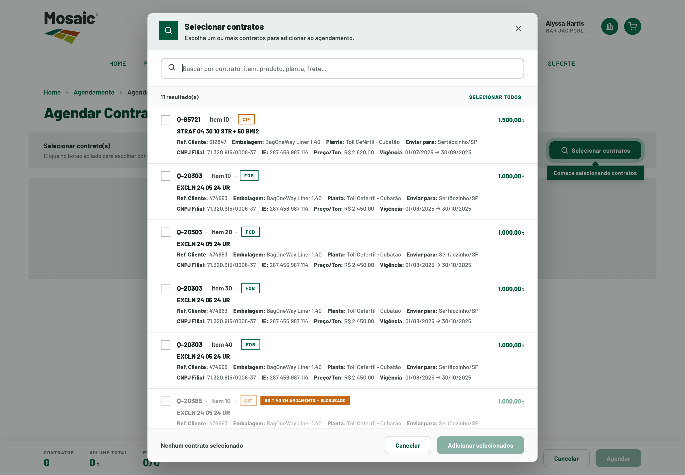

Mosaic Direct 2.0
Portal do Cliente — padronização de modais, tabelas e fluxos de agendamento e protocolo, com foco em consistência e redução de atrito.
Melhorias focadas em consistência visual e em manter a informação essencial sempre acessível.

Antes & Depois
A mesma tela, antes e depois da padronização.
- Seleção em painéis laterais (side-nav), fora do foco.
- Banner informativo ocupando espaço acima da tabela.
- Barra de scroll horizontal duplicada.
- Edição inline confusa na célula.
- Scroll horizontal “se perdendo”, sem cabeçalho fixo.
- Seleção em modal centralizado, no foco da tela.
- Banner → ícone ⓘ no título (espaço recuperado).
- Tabela contida + cabeçalho fixo.
- 1ª coluna congelada — referência sempre visível.
- Botões de bloco ‹ › para o scroll horizontal.
- Linha zebrada e seleção pela linha inteira.
Impacto medido
Melhorias mensuráveis nos indicadores-chave.
✓ Padronização
Mesmos componentes em todas as telas — modais, tabelas, badges e datepicker.
Sem componentes "órfãos"
Manutenção mais simples
✓ Hierarquia visual
Uso estratégico de destaque para os campos críticos.
Status em badge colorido
Protocolo congelado à esquerda
* Estimativas baseadas em heurísticas de UX, benchmarks da Nielsen Norman Group e padrões de comportamento observados.
Otimizações técnicas
Decisões de implementação alinhadas com o time de engenharia.

Pontos de UX
Impacto de negócio
Por que isso importa para a operação.
Consistência
Mesmos padrões em todas as telas reduzem a curva de aprendizado.
Menos atrito
Modais no foco e menos cliques tornam os fluxos mais rápidos.
Acessibilidade
Botões reais (‹ ›) funcionam por teclado e leitor de tela.
Decisão técnica alinhada
O scroll foi fechado com a engenharia: baixo risco em LWC, igual em portal, CS e mobile.
Quer ver no portal?
Abra o Mosaic Direct e navegue pelas telas já otimizadas.
Ir para o Mosaic Direct →